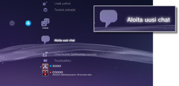
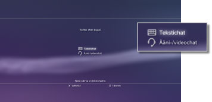
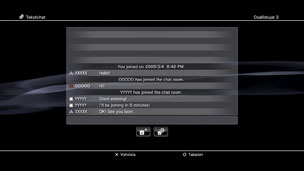
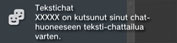

Ystävät > Tekstichat > Tekstichatin aloittaminen tai lopettaminen
Tekstichatin aloittaminen tai lopettaminen
Tämän toiminnon käyttäminen saattaa edellyttää, että käyttöjärjestelmä päivitetään.
Voit chattailla ystäväluettelossa olevien henkilöiden kanssa.
Tekstichatin aloittaminen
1. |
Valitse |
|---|---|
|
 |
|
2. |
Valitse |
|
 |
|
3. |
Kirjoita tekstichat-huoneen nimi ja valitse sitten [OK]. |
4. |
Valitse chattiin kutsuttavat ystävät ja valitse sitten [OK]. |
|
 |
 (Aloita uusi chat).
(Aloita uusi chat). (Tekstichat).
(Tekstichat).Vihjeitä
- Tekstichatin käyttäminen edellyttää, että olet kirjautunut PSNSM-verkkoon.
- Tekstichatissa ei lähetetä chat-kutsuviestiä.
- Tekstichat-huoneeseen voi liittyä enintään 16 henkilöä.
- Tekstichat-toimintoa ei voi käyttää, jos sen käyttöä on rajoitettu. Lisätietoja lapsilukon asetuksista on tämän oppaan kohdassa [Tietoja XMB™-valikosta] > [Lapsilukko-ominaisuuden käyttäminen].
Tekstichat-huoneeseen liittyminen
Jos saat kutsun tekstichatiin, näytön oikeaan yläkulmaan tulee näkyviin tiedonanto. Valitse  (Chat-huone (pelkästään tekstiä)) kohdasta
(Chat-huone (pelkästään tekstiä)) kohdasta  (Ystävät) ja valitse sitten chat-huone, johon haluat liittyä.
(Ystävät) ja valitse sitten chat-huone, johon haluat liittyä.

Vihjeitä
- Jos >
 (Järjestelmäasetukset) -valikon
(Järjestelmäasetukset) -valikon  (Asetukset) -alavalikon [Tiedonannot]-asetuksena on [Älä näytä], tiedonannot eivät tule näkyviin.
(Asetukset) -alavalikon [Tiedonannot]-asetuksena on [Älä näytä], tiedonannot eivät tule näkyviin. - Useimmissa peleissä voi liittyä tekstichattiin pelaamisen aikana. Paina langattoman ohjaimen PS-näppäintä ja valitse sitten chat-huone, johon haluat liittyä, kohdasta (Ystävät) > (Chat-huone (pelkästään tekstiä)). Voit palata pelinäyttöön painamalla PS-näppäintä.
- Voit liittyä enintään kolmeen chat-huoneeseen samanaikaisesti. Jos liityt neljänteen chat-huoneeseen, sinut poistetaan ensimmäisestä chat-huoneesta automaattisesti.
- Kohdassa (Chat-huone (pelkästään tekstiä)) voi näkyä enintään 20 chat-huonetta. Jos chat-huoneita on yli 20, vanhempia chat-huoneita poistetaan automaattisesti sitä mukaa kun uusia chat-huoneita avautuu.
Chat-huoneesta poistuminen
Sulje tekstichat-näyttö painamalla  -näppäintä. Valitse chat-huone, josta haluat poistua, paina
-näppäintä. Valitse chat-huone, josta haluat poistua, paina  -näppäintä ja valitse sitten asetusvalikosta [Poistu].
-näppäintä ja valitse sitten asetusvalikosta [Poistu].
Vihje
Jos katkaiset PS3™-järjestelmän virran tai kirjaudut ulos PSNSM-verkosta, sinut poistetaan chat-huoneesta automaattisesti. Jos poistut chat-huoneesta ja liityt siihen uudelleen, poissaolosi aikana kirjoitetut chat-viestit eivät tule näkyviin.
Chat-huoneen poistaminen
Valitse poistettava chat-huone, paina -näppäintä ja valitse sitten asetusvalikosta [Poista].
Ohjauspaneelin käyttäminen
Tekstichat-näytön ohjauspaneelin avulla voit suorittaa monenlaisia tehtäviä.
 |
Kutsu ystävä | Kutsu ystävä tekstichat-huoneeseen |
|---|---|---|
 |
Osallistujalista | Katsele luetteloa chat-huoneessa keskustelevista henkilöistä |